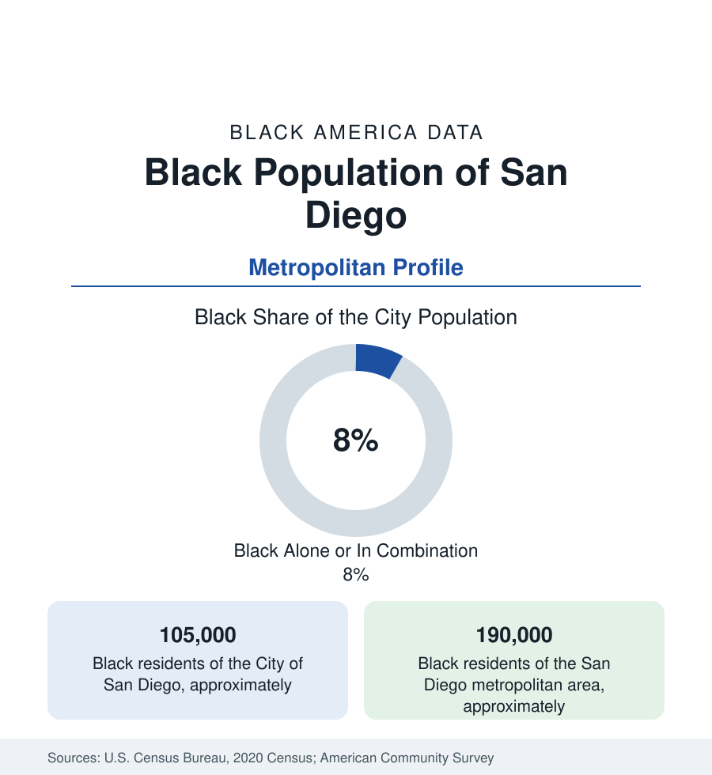

Black Cities
Black San Diego: The Southeast and the Navy's City
San Diego holds about 105,000 Black residents in the city and 190,000 across the metro — a military-built community in America's finest-weather city. The census profile.

San Diego holds about 105,000 Black residents within the city — Black alone or in combination, roughly eight percent of its 1.39 million people — and about 190,000 across the metropolitan area. Black San Diego is a military community at its root: the Navy's Pacific city drew Black sailors and shipyard workers through the twentieth century, settled them in the southeast quadrant, and built there — against California's full inventory of exclusions — a complete community in the country's most famously pleasant climate.
Southeast San Diego and the Euclid Corridor
The community's geography is the southeast: the neighborhoods along and below Imperial Avenue and Euclid Avenue — Lincoln Park, Valencia Park, Oak Park, Emerald Hills, Skyline, Paradise Hills — the district the covenants and the freeway map assigned to Black San Diego and which Black San Diego made its own. Logan Heights and Barrio Logan at the district's western edge hold the older layer (and Chicano Park's murals at the neighborhoods' seam), Encanto's hills the professional class's mid-century subdivisions, and the newer growth spreads to the suburban south and east — Chula Vista, La Mesa, Spring Valley, Lemon Grove (the small city east of the line with one of the county's oldest Black communities and its own civil-rights footnotes) — and north to the military suburbs of Mira Mesa and Oceanside (Camp Pendleton's city, where the Marine Corps anchors a substantial Black population at the county's northern edge). The southeast's institutional core persists along Euclid: the churches, the Malcolm X Library branch in Valencia Park (among the system's most programmed), the Tubman-Chavez Center, and the elementary schools of the Lincoln cluster.
The Navy's City: Work and the Shipyard Floor
The employment file is written by the fleet: Naval Base San Diego and the region's defense economy employ Black San Diego directly (the enlisted and civilian workforces of the installations — the military profile's Pacific hub) and through the shipbuilding and repair yards (General Dynamics NASSCO and the waterfront contractors) whose wartime hiring built the community and whose modern workforce keeps its industrial tier. The civilian columns follow the California pattern at San Diego prices: the health systems and biotech's support tiers (the metro's signature industry employing Black workers mainly below its laboratory class), tourism and hospitality at the Gaslamp-and-beaches wage floor, the universities (San Diego State, UC San Diego's La Jolla distance a geography of its own), and the logistics of the border economy. The indicators record the California squeeze at maximum sunshine: median Black incomes respectable by national tables, housing costs that consume them anyway, and Black homeownership in the Skyline and Encanto subdivisions standing as the community's ballast — much of it bought on VA loans by the Navy generations, the southeast's equity written by the fleet.
Institutions at the Border
The institutional layer: the churches of the southeast corridor, the San Diego Voice & Viewpoint (the Black newspaper), the Urban League of San Diego County, the NAACP branch whose school cases reached the state's courts, and San Diego State's Africana Studies (among the nation's first such departments, 1972) anchoring the academic file. The border gives the community its distinctive modern layer: San Diego's Black population includes a substantial Haitian and Afro-Latino presence at the Tijuana crossing (the asylum-era data made the border's Black migration a national story from this city's shelters), Ethiopian and Somali communities in City Heights (the metro's refugee district, just north of the southeast), and the binational cultural traffic of the Cali-Baja region — Black San Diego is a border community in a way no other profile in this section quite is.
Change and the Estimates
The estimates show the metro's Black population growing in count while the city's share slips — the affordability dispersals to Riverside County's inland metros and out of state (the reverse-migration stream's western tributary) against the southeast's rootedness — with the revival file along the Imperial and Euclid corridors (the transit-village investments, the cultural district designations) measuring the city's reinvestment intent. The police and school data of the district run their own civic files, and the Padres' East Village sits one freeway from the neighborhoods that supplied generations of its fans.
Reading the San Diego Numbers
San Diego is the Navy profile at city scale: a Black community mustered in by the fleet, quartered in the southeast, and rooted for a century in the mildest weather in America. Its 190,000 metro residents hold the Euclid corridor against the California math — and the ships still come in, bringing the community's next generation in uniform every year.
More in Black Cities
Black Atlanta: Population, Distribution, and Growth of a Black Metropolis
Metro Atlanta holds more than two million Black residents — roughly one in three, second only to New York. The suburban distribution, migration history, and composition of Black Atlanta in the census data.
Black New York: The Largest Black Population in America
The New York metropolitan area holds about 3.4 million Black residents — more than any metro in the nation — and the city itself about two million. The census profile.
Black Washington: The District and the Metro
The Washington metro holds about 1.6 million Black residents, and the District itself — long a majority-Black city — now records a Black share near 41 percent. The census profile.
Source: U.S. Census Bureau, 2020 Census; American Community Survey; Population Estimates Program.